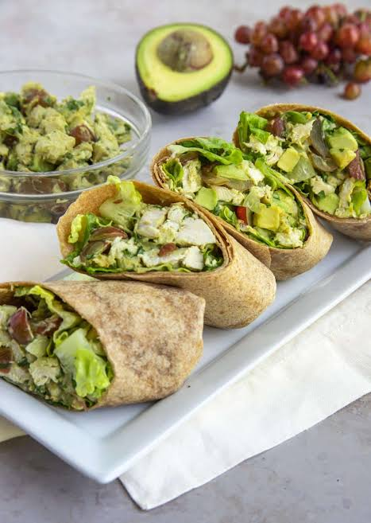

Home
Chicken Wrap

Ingredients
- Roasted or poached chicken
- California avocado
- Red Grapes
- Lemon juice
- Fresh Parsley
- Sweet Onion
- dijon Mustard
- Romaine Lettuce
- Avocado caeser Dressing
- 12 Inch whole wheat Tortilla wraps
Steps
- For the chicken you can use poached chicken, grilled chicken or rotisserie chicken from the grocery store. You will need about 1 pound of chopped chicken breast.
- Chop the red grapes in half. Place the chopped chicken, chopped avocado, parsley, onion, red grapes in a large bowl. Toss the ingredients together.
- Add 1/2 cup of the avocado dressing, the Dijon mustard gently stir them into the ingredients. Taste the salad and add salt and pepper to taste.
- Make the Avocado Caesar Dressing. Place the avocado, mayonnaise, lemon juice, Worchestershire sauce and the kosher salt in the bowl of small food processor. Process the ingredients until they are smooth.